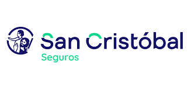
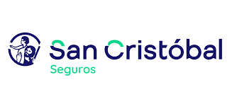

Servicios
Vendemos e instalamos parabrisas originales y alternativos con garantía, respetando los estándares de seguridad y estética del vehículo.
Contamos con un amplio stock para todo tipo de vehículos, y realizamos colocaciones con materiales de primera calidad y mano de obra especializada, asegurando un sellado perfecto y durabilidad.
Ofrecemos un servicio rápido, seguro y económico para la reparación de parabrisas con daños menores, como astillas o rajaduras pequeñas.
Utilizamos resinas de alta calidad que recuperan la resistencia del cristal y mejoran la visibilidad, evitando reemplazos innecesarios.
Colocamos todo tipo de cristales: lunetas, vidrios de puertas, aletas, ventiletes y cristales de techos.
Garantizamos una instalación segura, prolija y en línea con las especificaciones del fabricante.
Sellamos, o despegamos y volvemos a colocar cristales para solucionar filtraciones y asegurar un sellado perfecto.
También realizamos el sellado de techos corredizos para evitar que puedan ser removidos o robados.
Realizamos el grabado obligatorio de número de patente y chasis en los vidrios del vehículo, cumpliendo con la disposición de la DNRPA (Dirección Nacional del Registro de la Propiedad del Automotor), vigente en todo el territorio argentino.
Este procedimiento es exigido por ley para aumentar la seguridad y prevenir el robo de autopartes. También es requerido al momento de transferir o asegurar un vehículo.
Comercializamos obleas reglamentarias según la normativa vigente en la provincia de Santa Fe, exigidas para circular con vidrios polarizados.
Estas obleas identifican que el polarizado cumple con los requisitos legales y evitan sanciones en controles viales.
Atendemos tanto a clientes particulares como a traves de compañías de seguros, gestionando cada caso con rapidez y compromiso.
Nos encargamos de verificar órdenes de trabajo, coordinar con aseguradoras y brindar soluciones efectivas, sin complicaciones para el cliente.
Ofrecemos atención personalizada en el lugar, realizando colocaciones y reparaciones de cristales directamente en talleres mecánicos, concesionarios y centros de servicio.
Brindamos soluciones ágiles, seguras y adaptadas a la dinámica de cada establecimiento.
¿Qué dicen nuestros clientes?
“En un rubro que a veces puede ser problemático, esta empresa sorprende con la velocidad en cada etapa del proceso: para coordinar el turno, recibir el vehículo y entregar el trabajo finalizado. Realmente impecable. Los vuelvo a elegir sin dudas.”
Lucina Perich ⭐⭐⭐⭐⭐¿Dónde estamos?
Ov. Lagos 1533, Rosario, a metros de Av. Pellegrini.
Trabajamos con las mejores marcas


Trabajamos con todas las compañías de seguros


 
